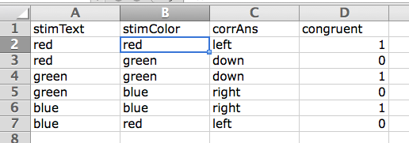
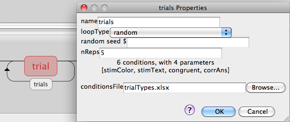

|
|
|
|
General issues:
- PsychoPy handles a variety of colour spaces and stimulus units but these are a common source of confusion and PsychoPy doesn’t check if you’ve done something sensible!
- PsychoPy expects to control on each frame (each refresh of the screen) what gets drawn. So, especially when writing code, you need to think about controlling things at that level.
- PsychoPy expects a decent graphics card (seriously, avoid intel integrated graphics) and aims to synchronise to the screen. If it can’t then stimulus timing cannot be controlled.
- Even when it’s a good graphics card you should know the limits of what your computer can manage and be careful, especially when loading images from disk.
PsychoPy has very many stimulus types:
- ImageStim for bitmaps (pretty much any format). These can be used either as the image or as an alpha mask
- GratingStim is similar to ImageStim but it will use the image as a cyclic texture and you can specify the spatial frequency of that texture
- RadialStim for radial patterns (e.g. retinotopy patches)
- TextStim, including choice of fonts and Unicode characters (but no real ‘formatting’)
- DotStim for random dot kinematograms with a variety of signal/noise methods
- ElementArray allows dynamic (hardware-optimised) presentation of similar-textured elements. e.g. create an array of gabors or a point-light walker
- Shapes (basic or custom vertices, filled or unfilled)
- RatingScale OK this isn’t a stimulus exactly but it’s pretty handy
- Sounds (either generated or stored in wav files)
Many inputs options:
- mouse, keyboard, joystick
- eyetrackers
- serial/parallel ports
- ...anything that can communicate with your computer!
- microphone, including speech recognition by google!!
Many data output formats:
- ‘long-wide’ trial-by-trial data in a csv file
- ‘summarised’ data (one row per condition) in csv or Excel
- Python binary files for scripting analyses
- log files to check timing and for when you forget to store the right stuff!
Now, the best place to work out what’s possible is to look through some of the demo code
The key concepts you’ll need for the Builder is the idea that you have Components that are put together in Routines and these Routines are combined in a Flow diagram.
Let’s just take a look in the Builder view to see how those work together...
Now the next issue is how to create repetition of the trials in such a way that the condition changes on each repeat. To do that we need to:
- Change the settings of the experiment
- click on the Experiment Settings icon (see right)
- we want to use pixels as the units in this experiment, whereas the default is normalised (in the user preferences)
- Set up the basic trial components:
- create a text Component called stimulus in our trial:
- text height = 100 (we’re using pixels)
- start = 0.5 secs
- end = <leave blank> (meaning infinite)
- text = red (for now!)
- color = blue (for now!)
- create a Grating Component called fixation:
- start = 0
- end =
- texture = None
- mask = circle
- opacity = 0.7
- size = 16 (pixels)
- create a Keyboard Component called resp:
- start = 0.5 sec
- end =
- force end routine = True
- save your experiment and run it. Did your one trial look right?
- Create a conditions file in excel (an xlsx or csv file)

- columns with headings stimText, stimColor, cong, corrAns. These parameters must have no spaces or punctuation. Case matters! They will become variable names in a script.
- stimText = red, green and blue
- stimColor = red, green and blue
- cong = 1 or 0
- corrAns = left, down, right (for red, green, blue ink colors)
- Create a loop in the Flow and assign conditions file

- click on Insert Loop (once)
- click (once) where you want the loop to start. On this occasion the other end of the loop is already determined because there’s only one other possible place.
- the loop dialog will now appear, in which you can set how the trials (that’s a good name for hits loop!) will run
- for the conditions file fetch the file you just created. This should then tell you how many trial types and parameters there are
- set nReps to 1 for now (can add further reps later, when you aren’t debugging!)
- now, on every pass around that loop a new random trial (row in the excel file) will be fetched and populate the parameter names as variables
- Go back and insert those variable names into your word stimulus:
- set the color to be $stimColor
- set the text to be $stimText
- notice when you inserted $ the font changed. The $ indicates to PsychoPy that this should not be treated literally - it’s a variable or even pure python code.
- for both these properties set the value to ‘update every repeat’ !!
- If you like you could create additional Routines for giving instructions and saying thanks at the end
There’s a 15min youtube video building the Stroop <http://www.youtube.com/watch?v=VV6qhuQgsiI> task from scratch, that will take you through all these steps again if you forget something. The slight difference is that we’re going to use pixels as the units in the version we created today.
The finished product is available in the demos folder of the workshop materials.
At the top of the Builder view there is a demos menu. If you unpack them and go back to this menu you can take a look at other example experiments.
My stimulus didn’t appear:
- possibly it was smaller than a pixel (0.5 is a sensible size in normalised units but not in pixels)
- possibly it was off the screen; [10, 10] is sensible in pixels but not in normalised units
I got an error that ‘xxxxxxxx is not defined’:
- did you remember to set that variable to ‘set every repeat’. PsychoPy is confused by things that look like variables but it’s told are constant?
- did you spell it correctly in the conditions file (case sensitive)?
- have you referred to it in a Routine before the Loop where the variable gets defined?
You can compile your experiment (.psyexp) file into a script (.py) and see what it looks like. But note that this is a one-way street. If you change that file you cannot then go back and make changes in the Builder and expect them to be updated. Once you switch and experiment to being in a script that is how it must stay.
BUT you can also insert code into your Builder Experiment using a Code Component (under the custom section of the Components panel. Using this in your Routine you can set chunks of code that will executed at various chosen points in your experiment. (In fact that’s all that the other components are - little chunks of code being executed in the same 5 places).
We’ll use this concept later with the eye trackers.